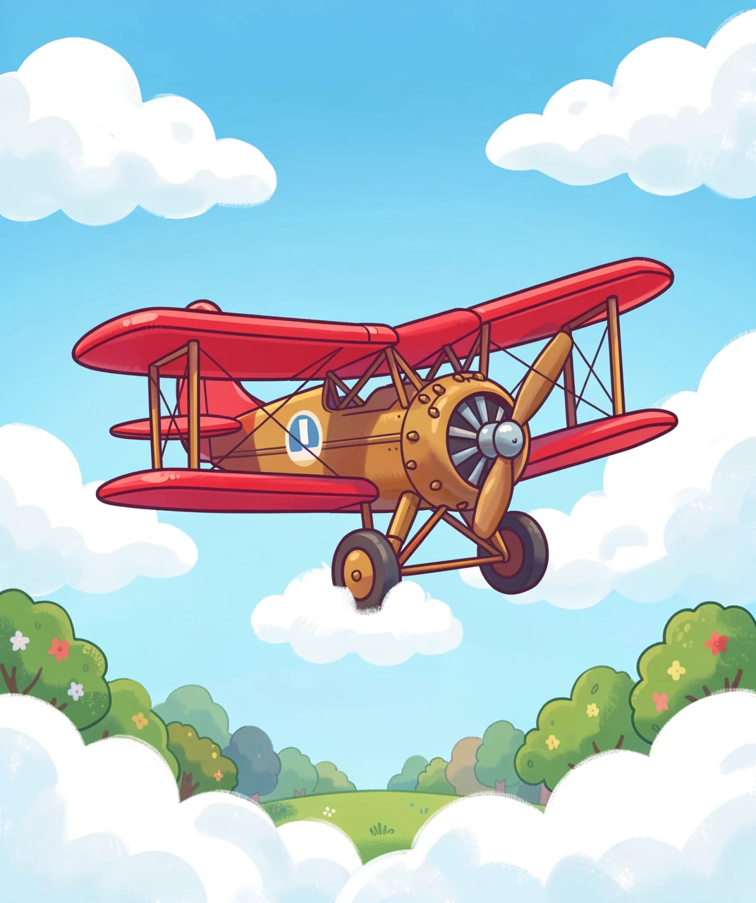
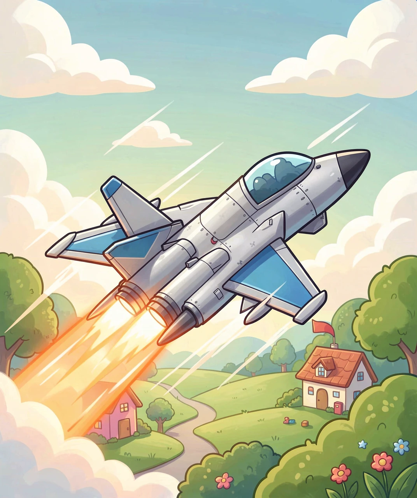
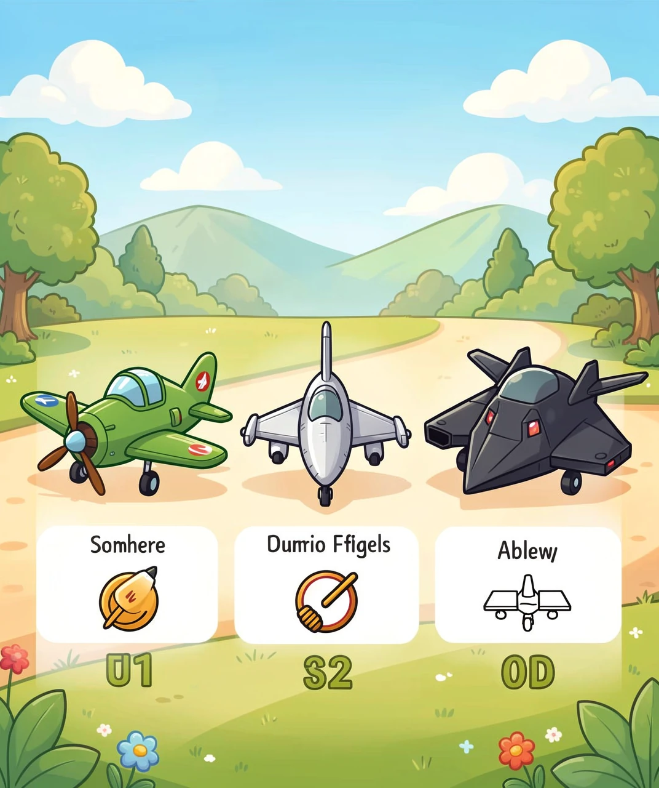
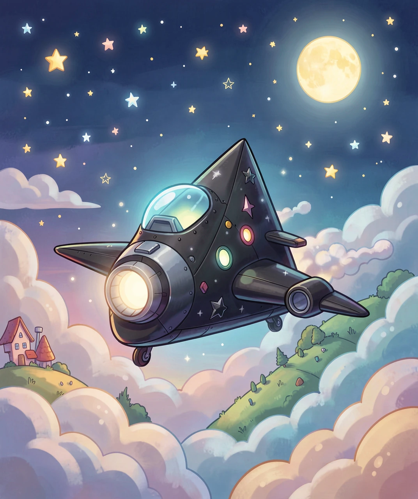
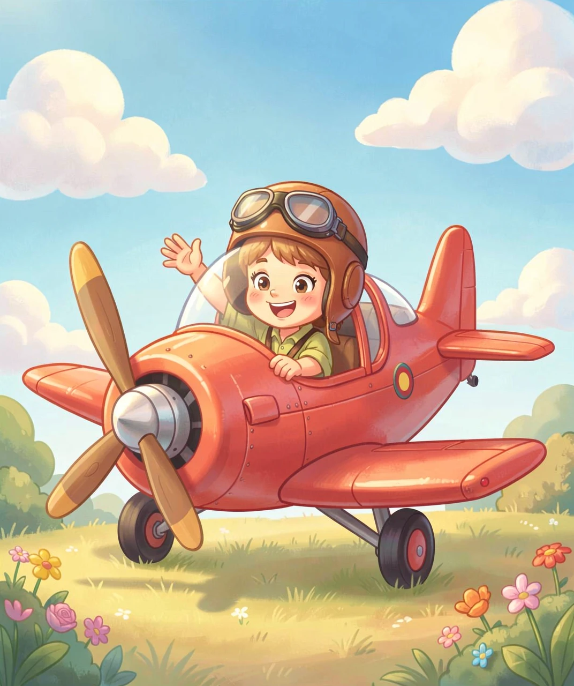

从木头翅膀到隐形杀手 —— 战斗机的百年进化史
如果让你画一架战斗机，你脑子里浮现的可能是流线型的银色机身、尖尖的机头、屁股后面喷着火。但一百多年前，世界上最早的战斗机长什么样？
答案是——看起来就像一只木头和帆布做的大风筝！
第一次世界大战期间（1914-1918年），人们发现飞机可以用来侦察敌情。但敌人也有飞机呀，于是两个飞行员在空中相遇时，就开始用手枪对射！后来有人在飞机上装了机枪，真正的「战斗机」诞生了。
那时的战斗机叫「双翼机」，有两层翅膀，布蒙的机身，木头骨架。最快也就飞 200 公里/小时——比今天的高铁还慢！最有名的是英国的「骆驼」战斗机和德国的「福克三翼机」。红男爵——历史上最著名的王牌飞行员，就驾驶着一架血红色的福克三翼机，击落了 80 架敌机！

🛩️ 图1：一战时期的双翼机——战斗机界的「老爷爷」
二战（1939-1945年）彻底改变了战斗机。螺旋桨被喷气发动机取代——飞机不再靠螺旋桨「拉」着飞，而是像火箭一样靠喷出高温气体「推」着飞！
第一架实用的喷气式战斗机是德国的 Me 262，它快得像魔鬼——比盟军的螺旋桨飞机快 160 公里/小时。可惜它出现得太晚，没能改变战争的结局。
战后，喷气式战斗机飞速发展。到了 1950 年代的朝鲜战争，出现了历史上第一次喷气机对喷气机的空战——美国的 F-86「佩刀」对战苏联的米格-15「柴捆」。它们在空中缠斗，像两只燕子互相追逐。
但真正划时代的突破发生在1947年10月14日——美国试飞员查克·耶格尔驾驶 X-1 试验机，成为人类历史上第一个突破音速的人！从此，战斗机能飞得比声音还快，「音爆」这个词诞生了。

⚡ 图2：现代喷气式战斗机——后掠翼、尾部喷火、比声音还快
今天的战斗机五花八门，但可以大致分成三类，各有各的本事：
专门在空中和敌方战斗机格斗。它们轻巧灵活、速度快、机动性极强。代表作是美国的 F-16「战隼」和俄罗斯的苏-35。F-16 外形像一只凶猛的猎鹰，能做出 9G 的高过载机动——也就是说飞行员承受的重力是自身的 9 倍！
F-16 有多强？全球有 25 个国家装备，生产超过 4600 架，是历史上产量最大的第四代战斗机。它的座舱视野极佳，飞行员甚至能看到自己机翼下面的地面。
既能空战，又能对地轰炸。就像全能运动员，十项全能！代表是美国的 F-22「猛禽」（第五代隐身战斗机）和欧洲的「台风」战斗机。F-22 是世界上最先进的战斗机之一，能超音速巡航——不开加力就能长时间超音速飞行，这项能力连大多数四代机都没有。
有趣的是：F-22 的造价高达 1.5 亿美元一架，加上研发成本，平摊后每架超过 3 亿美元！因为太贵，美国只生产了 187 架就停产了。
它们的外形奇奇怪怪——全是棱角和平面，不像「正常」的飞机。这可不是设计师在乱画，而是故意让雷达波反射到别处去，让敌人的雷达「看不见」自己！
美国的 F-117「夜鹰」（世界上第一款隐形战斗机）造得像一颗切割过的黑钻石，雷达反射面积据说只有一只鸟那么大。B-2「幽灵」隐形轰炸机更夸张——翼展 52 米（比波音 737 还宽），但在雷达上看起来像一只老鹰！
中国的歼-20「威龙」也是隐形战斗机，2017 年正式服役，标志着中国成为世界上第二个装备第五代隐形战斗机的国家。

🔍 图3：三个类型排排站——螺旋桨老爷爷、喷气小帅哥、隐身幽灵三兄弟
你可能觉得隐形飞机就像哈利·波特的隐身斗篷——「呼」的一下就看不见了。但其实，隐形战斗机的「隐形」是指让雷达看不见它，用肉眼还是能看到一个怪模怪样的黑影划过天空。
雷达工作原理：发射电波 → 电波碰到飞机弹回来 → 雷达接收回波 → 屏幕上显示一个亮点。要让飞机变「隐身」，就得让电波不弹回来：
🔺 形状设计：把机身做成多面体，电波碰到后会像乒乓球碰到斜角一样弹到别处去，不弹回雷达站。
🎨 隐身涂料：飞机表面涂了一层特殊的「吸波材料」，就像海绵吸水一样把雷达电波吸收掉。
🔥 隐藏热源：喷气发动机的尾焰很热，红外探测器能捕捉到。隐形战斗机会把发动机藏在机身深处，喷口做成特殊形状来降低温度。

👻 图4：夜空中幽灵般的隐身轰炸机——雷达上的大小就像一只鸟
开战斗机和开汽车完全不是一回事。战斗机飞行员穿的装备，其实是一套高科技的生命维持系统！
🪖 飞行头盔：看着像个摩托车头盔，但里面装了瞄准系统——飞行员看哪，导弹就打哪！最新的头盔还能在面罩上投影飞行数据，像科幻电影里的 HUD。
👕 抗荷服：高速转弯时重力会把血液压到脚底，飞行员会「黑视」——眼前一黑失去知觉。抗荷服在 G 力上升时自动充气，把腿和腹部的血液挤回大脑。
🚀 弹射座椅：危急时刻，拉动把手，座椅会用火箭把飞行员弹射出座舱。整个过程不到 1 秒！但代价也很大——每弹射一次，脊柱会被压缩 2-3 厘米。
💺 氧气面罩：高空中空气稀薄，不戴面罩飞行员会缺氧昏迷。军用面罩还内置了麦克风用于无线电通话。

🛡️ 图5：戴上飞行头盔，坐上敞篷螺旋桨飞机，也许你就是未来的飞行员！